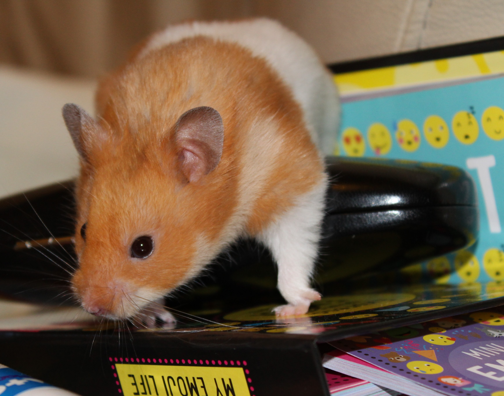

Travellers return.
28-Jul-2017 | Milku
And a night full of football.
I didn't linger in bed yesterday evening.

There was the excitement of my humans coming back from their travels... Julius Caesar sounds like a blood-thirsty play. I wouldn't want to be a stage hand at the theatre as they had to mop the stage during the interval to get rid of the blood!
And I had to work hard to keep track of two football matches.
I could watch the Lionesses win again from the comfort of my cage. I did get a bit nervous when Portugal equalised, but thank goodness that Nikita Parris restored the lead.
It meant I could concentrate on worrying about how Everton were getting on in their Europa League third qualifying round tie against Slovakian side MFK Ruzomberok. I'd had a feeling that there would be two victories to celebrate, but it wasn't easy waiting for updates on the BBC live feed. Hopefully, Everton will add to their goal tally next week in Slovakia. Leighton Baines' single goal isn't enough. I'm thinking that Everton successes will make my human provider of treats happy and I might get lots more tasty morsels...
